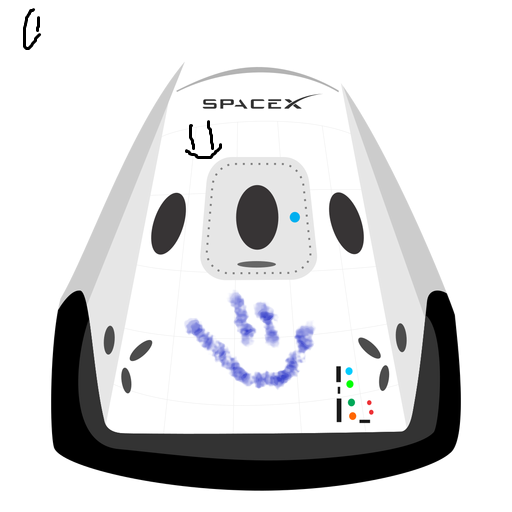

Hyperblog
Por que aprender desarrollo Web
Desarrollo de sofware
Lo increible de la industria 4.0

En los próximos 10 años, sólo en EE.UU, se crearán 1.400.000 de puestos para programadores, aunque habrá únicamente 400 mil personas capacitadas para ocuparlos. Millones de puertas se abrirán para quienes sepan programar.
Camilo Valencia